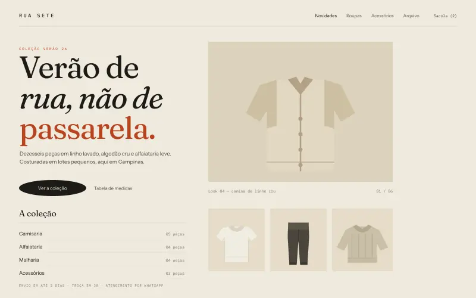
Rua Sete
01Loja de roupas contemporâneas com catálogo, filtros por tamanho e cor, página de produto e carrinho que funciona de verdade.
Projetos conceituais · 2026
Cada projeto começou como um exercício: uma marca que não existe, um catálogo inteiro para montar, um sistema com dados inventados. Todos estão abertos — cliquei em “abrir” e use como se fosse real.
15 projetos

Loja de roupas contemporâneas com catálogo, filtros por tamanho e cor, página de produto e carrinho que funciona de verdade.
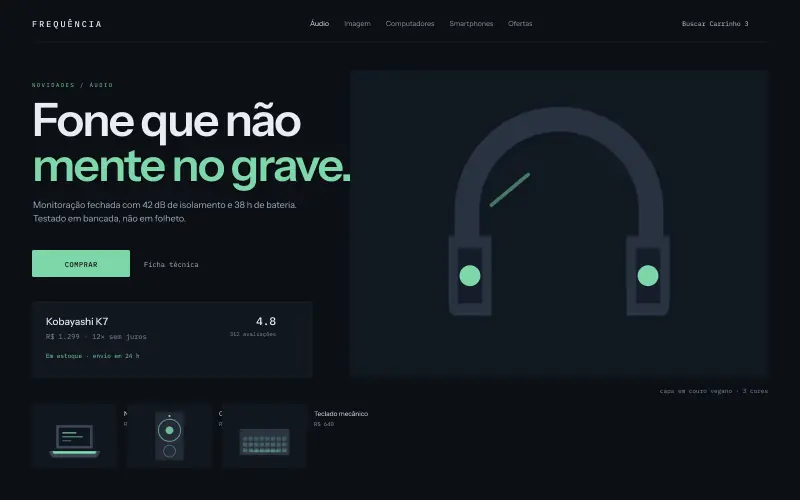
Loja de eletrônicos e áudio: ficha técnica comparável, filtros por faixa de preço e busca que entende “fone bluetooth”.
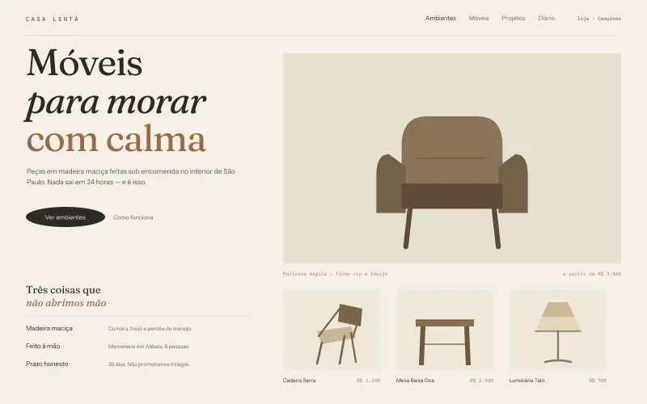
Decoração e móveis com ambientes montados, medidas reais em cada peça e um carrinho que calcula frete fictício.
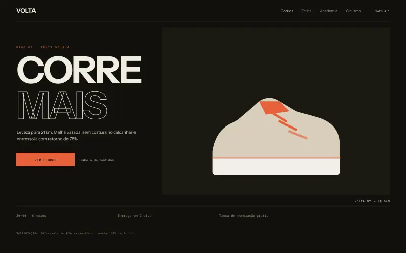
Artigos esportivos com tabela de numeração, filtros por modalidade e uma página de produto com guia de medidas.
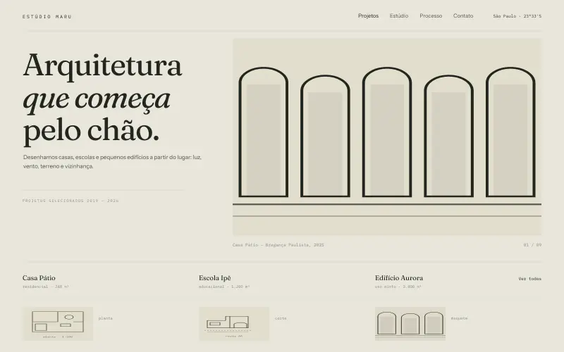
Site de escritório de arquitetura: galeria filtrável por tipo, ficha de cada projeto em diálogo e desenhos feitos em SVG.
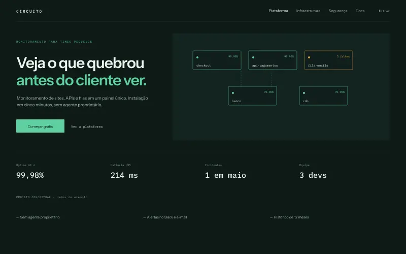
Empresa de tecnologia com diagrama de arquitetura desenhado em SVG, painel de status e planos comparáveis.
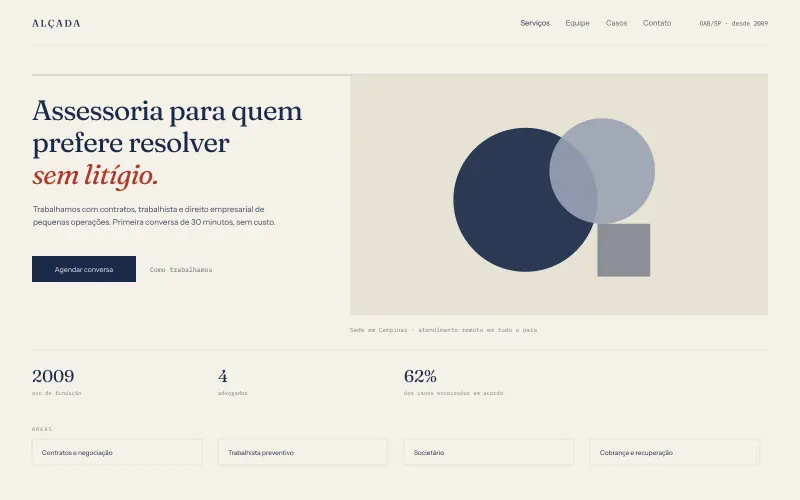
Serviços profissionais: áreas de atuação em lista editorial, etapas do processo, equipe e formulário de contato.
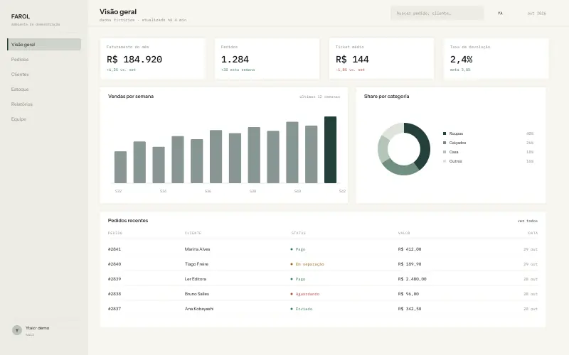
Dashboard de operação: quatro visões, tabela ordenável, filtros por status e painel lateral de detalhe do pedido.
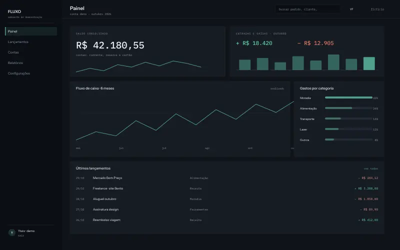
Painel financeiro com gráfico de barras em SVG, lançamentos filtráveis e formulário de novo lançamento com validação.
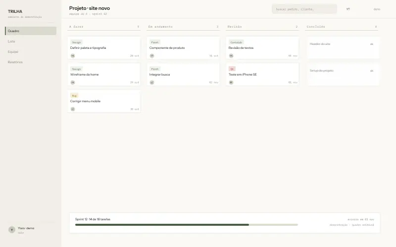
Organização de tarefas e times: quadro kanban com movimentação, visão em lista, equipe e detalhe da tarefa.
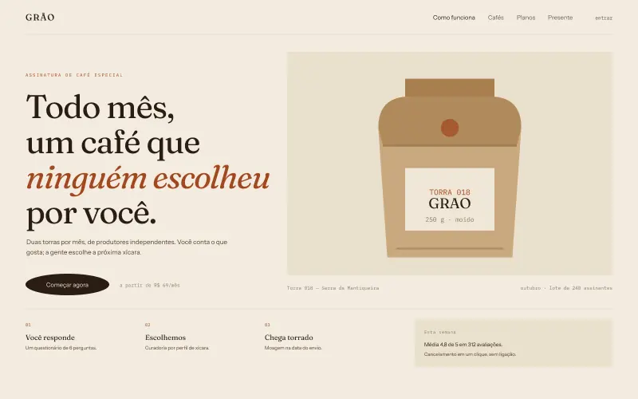
Assinatura de café especial com questionário de curadoria interativo, comparação de planos e perguntas frequentes.
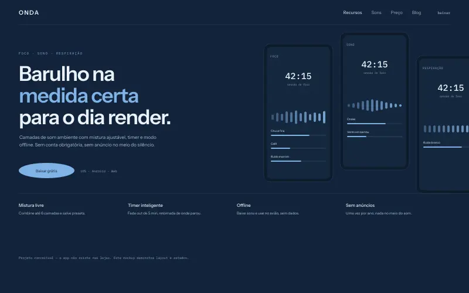
App de sons para foco e sono: mistura ajustável em tempo real na tela, timer que realmente conta e lista de sons.
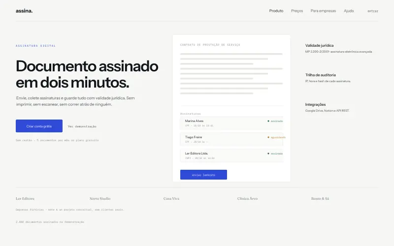
Assinatura eletrônica: fluxo em três passos, documento que recebe assinaturas na tela, preços e dúvidas.
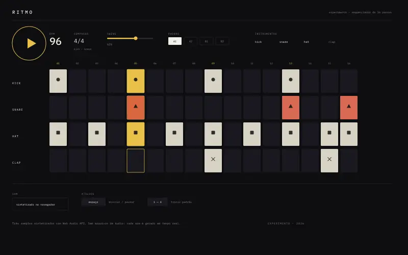
Sequenciador de 16 passos com quatro instrumentos sintetizados no navegador. Toca de verdade, sem arquivo de áudio.
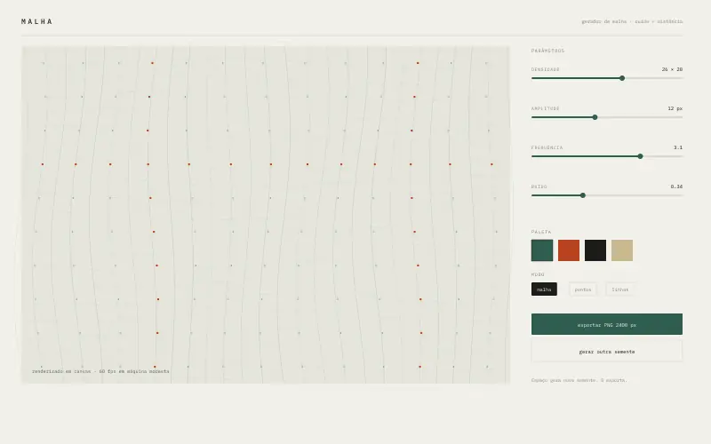
Gerador de desenho em canvas: a semente define pontos, densidade e distorção, e o resultado vira PNG.
Nenhum projeto nesta categoria.
Nota de honestidade
Nenhuma destas marcas existe. Não há cliente, briefing pago ou resultado comercial por trás delas — são exercícios de interface, feitos para praticar estrutura, estado e detalhe.
O que funciona, funciona de verdade: o carrinho guarda itens, os filtros filtram, os gráficos são calculados a partir dos dados de exemplo. O que é só demonstração está avisado dentro de cada página.